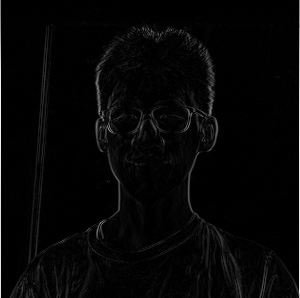
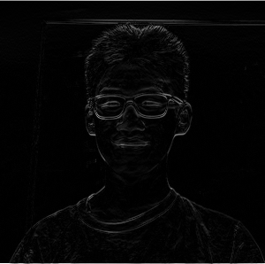
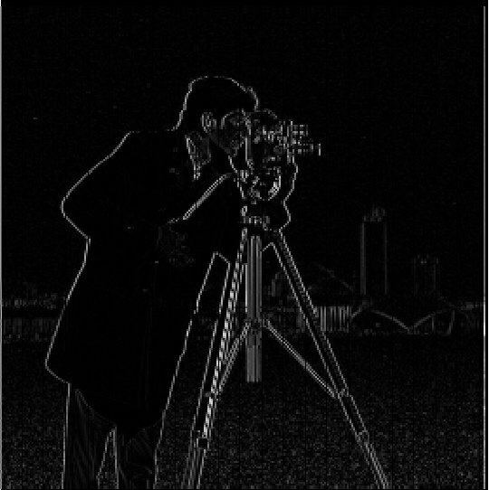
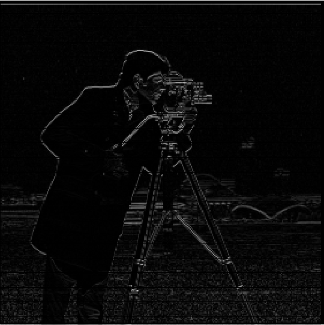
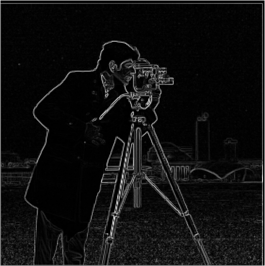
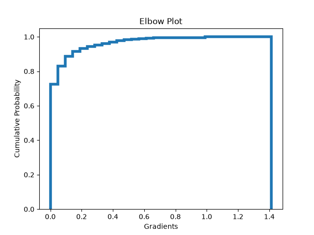

CS 180 · project 02
Filters & Frequencies
lucas zheng · github.com/3LucasZ/cs180-showcase
Convolutions from Scratch
TODO prose
def conv4(im, kern):
# heights, widths
H, W = im.shape
KH, KW = kern.shape
# paddings; "same" pad
PT = (KH-1)//2
PB = KH-1-PT
PL = (KW-1)//2
PR = KW-1-PL
pim = np.pad(im, ((PT, PB), (PL, PR)), mode="constant", constant_values=0)
out = np.zeros_like(im, dtype=float)
# conv flips cross-correlation
kern = np.flip(np.flip(kern, axis=0), axis=1)
for y in range(H):
for x in range(W):
for ky in range(KH):
for kx in range(KW):
out[y, x] += pim[y+ky, x+kx] * kern[ky, kx]
return out
TODO prose
def conv2(im, kern):
# heights, widths
H, W = im.shape
KH, KW = kern.shape
# paddings; "same" pad
PT = (KH-1)//2
PB = KH-1-PT
PL = (KW-1)//2
PR = KW-1-PL
pim = np.pad(im, ((PT, PB), (PL, PR)), mode="constant", constant_values=0)
out = np.zeros_like(im, dtype=float)
# conv flips cross-correlation
kern = np.flip(np.flip(kern, axis=0), axis=1)
for y in range(H):
for x in range(W):
# parallelize dot product with 0 loops instead of 2
out[y, x] = np.sum(pim[y:y+KH, x:x+KW] * kern)
return out
TODO prose
test_im = np.random.random((50, 50))*100
test_kern = np.random.random((9, 9))*100
test_2 = conv2(test_im, test_kern)
test_4 = conv4(test_im, test_kern)
test_sol = convolve2d(test_im, test_kern, mode="same",
boundary="fill", fillvalue=0)
print("Error on conv2:", np.sum(np.abs(test_sol - test_2)))
print("Runtime on conv2:")
print("Error on conv4:", np.sum(np.abs(test_sol - test_4)))
print("Runtime on conv4:")
Error on conv2: 5.721813067793846e-08 Error on conv4: 1.0582880349829793e-07
TODO prose
Blur and Derivatives
TODO prose
TODO prose


TODO prose
def post(im):
# post process
im = np.abs(im)
im = im / np.max(im) * 255
im = im.astype(np.uint8)
return im
box_kern = np.ones((9, 9)) / 81
out_box = post(conv2(im, box_kern))
cv2.imwrite(OUT_PATH / "selfie.box.png", out_box)
dx_kern = np.array([[1, 0, -1]])
dy_kern = np.array([[1], [0], [-1]])
out_dx = post(conv2(im, dx_kern))
out_dy = post(conv2(im, dy_kern))
cv2.imwrite(OUT_PATH / "selfie.dx.png", out_dx)
cv2.imwrite(OUT_PATH / "selfie.dy.png", out_dy)
Finite Difference Operator
TODO prose
dx_kern = np.array([[1, 0, -1]])
dy_kern = np.array([[1], [0], [-1]])
out_dx = convolve2d(im, dx_kern, mode="same",
boundary="fill", fillvalue=0)
out_dy = convolve2d(im, dy_kern, mode="same",
boundary="fill", fillvalue=0)



TODO prose
out_g = np.sqrt(out_dy**2 + out_dx**2)
# elbow plot?
plt.hist(out_g.flatten(), bins=30, cumulative=True,
density=True, linewidth=4, histtype='step')
plt.title('Elbow Plot')
plt.xlabel('Gradients')
plt.ylabel('Cumulative Probability')
plt.savefig(OUT_PATH / "cameraman.elbow.png")
# seems to be the elbow
thresh = 0.3
out_g = (out_g > thresh) * np.ones(out_g.shape)


TODO prose